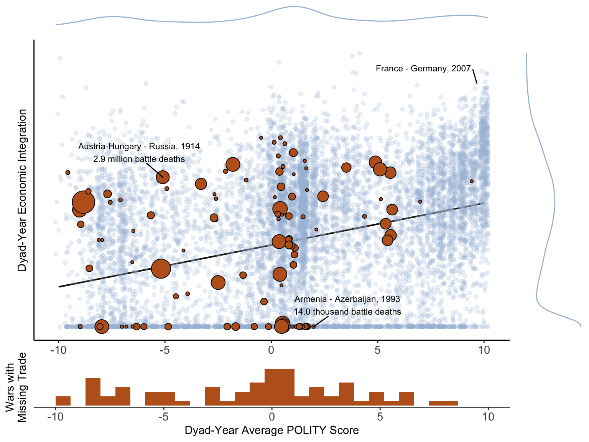

Gunboat Diplomacy
Political Bias, Trade Policy, and War
14 November 2019
Brendan Cooley
Ph.D. Candidate
Princeton University
bcooley (at) princeton.edu
Trade and War: Received Wisdom
“Free trade serves the cause of economic progress, and it serves the cause of world peace.”
\(\qquad\) – Ronald Reagan, Nov. 1982
“Commercial relations draw states into a web of mutual self-interest that constrains them from using force against one another.”
\(\qquad\) – Oneal and Russett (1999)
Dominant Paradigm: Trade mediates preexisting conflicts of interest
- Conflicts of interest: territorial, ideological, otherwise
- War disrupts trade, imposes opportunity costs
Gunboat Diplomacy
Examples
- Perry Expeditions (1852-1854)
- Opium Wars (1839-1842; 1856-1860)
- Euromaidan and War in Donbass (2014-present)
Commercial Policy Objectives
- Governments are mercantilistic, desiring
- Some degree of trade protection at home
- Trade liberalization or market access abroad
Market Access Externalities
- Protectionist barriers shift profits from foreign to home firms
- Trade policy generates conflicts of interest between mercantilist governments
International Anarchy
- Efforts to address externalities can include threats, displays, and uses of military force
- Bargaining critique (Fearon 1995): absence of war does not imply absence of coercion
A Theory of Trade Policy in the Shadow of Power
Model
- “New Trade” International Economy
- Krugman (1980), Venables (1987); Ossa (2012)
- Mercantilist/Politically-Biased Governments
- Grossman and Helpman (1994), Bueno De Mesquita et al. (2003), Jackson and Morelli (2007)
- Liberal governments afford consumers greater influence over the trade policymaking process
- Ultimatum Coercive Bargaining
- Fearon (1995), Fey and Kenkel (2019)
Results
- Trade and Conflict
- Liberal governments experience smaller conflicts of interest (Proposition 3)
- Most liberal governments never fight wars (Proposition 4)
- When shadow of power absent, trade increasing as governments become more liberal (Proposition 5)
- Trade Policy in the Shadow of Power
- Trade policies reflect balance of military power, powerful countries more protectionist in equilibrium (Proposition 6)
Trade and peace are correlated in equilibrium, but not because trade causes peace
Literature
- Trade and War
- Angell (1911), Polachek (1980), Gowa and Mansfield (1993), Morrow (1999), Barbieri and Levy (1999), Mansfield and Pevehouse (2000), Gartzke, Li, and Boehmer (2001), McDonald (2004), McDonald and Sweeney (2007), Gartzke (2007), Benson and Niou (2007), Philippe, Mayer, and Thoenig (2008), Hegre, Oneal, and Russett (2010), Copeland (2014)
- Power and Trade
- Hirschman (1945), Krasner (1976), Gourevitch (1978), Pollins (1989b), Pollins (1989a), Antràs and Padró i Miquel (2011), Chatagnier and Kavakli (2015), Carroll (2018)
- Political Economy of Trade Policy
- Mayer (1984), Grossman and Helpman (1994), Kono (2008), Gawande, Krishna, and Olarreaga (2009), Ossa (2011), Ossa (2012), Ossa (2014)
- Democracy and Trade
- Mansfield, Milner, and Rosendorff (2000), Milner and Kubota (2005)
- Democracy and War
- Lake (1992), Snyder (1993), Oneal and Russet (1997), Schultz (1998), Oneal and Russett (1999), Schultz (2001), Fearon (2008), Coe (n.d.)
The Commercial-Democratic Peace

Trade and War Onset

Model Overview
- Two goverments (\(i, j\)), ultimatum bargaining over tariffs
- Payoffs depend on international economic effects of tariffs and latent protectionism of governments
International Economy
- Mass of firms in each country (“industry”), produce differentiated varieties
- Outside sector (“agriculture”)
- Profit-shifting motivations for tariffs
Domestic Political Economy
- Governments maximize weighted combination of consumer welfare and industry profits
- Variation in preferences (open-protectionist)
- Tension in trade policy
- Tariffs increase profits
- Decrease consumer welfare
International Bargaining
- Threat point: regime change
- Power: probability government wins a war for regime change
- Victorious governments impose new preferences on vanquished governments
- Ultimatum offer: pair of tariffs
- Private information over wars costs \(\implies\) war in equilibrium
Comparative Statics
- \(\Delta\) Preferences \(\rightarrow \text{Pr} (\text{war})\)
- \(\Delta\) Preferences \(\rightarrow\) protection, trade flows
- \(\Delta\) Military power \(\rightarrow\) protection, trade flows
Bargaining Environment
- “Home” (\(i\)) government makes TIOLI trade policy offer to “foreign” (\(j\)) \(\widetilde{\boldsymbol{\tau}} = \left\{ \widetilde{\tau}_i, \widetilde{\tau}_j \right\} \in [1, \bar{\tau}]^2\)
- Foreign accepts or rejects
- Information about \(j\)’s costs of war (\(c_j\)) held privately, distributed uniform on \([\ubar{c}_j, \bar{c}_j]\)
Definition 1: A subgame perfect bargaining equilibrium is pair of strategies, \(\widetilde{\boldsymbol{\tau}}^\star(a_i, c_i)\) and \(\omega^\star(\widetilde{\boldsymbol{\tau}}; a_j, c_j)\) such that \[ \omega^\star(\widetilde{\boldsymbol{\tau}}; a_j, c_j, \rho) = \text{argmax}_{\omega \in \left\{\text{accept}, \text{war} \right\}} \widetilde{G}_j \left(\widetilde{\boldsymbol{\tau}}, \omega; a_j, c_j, \rho \right) \] and \[ \widetilde{\boldsymbol{\tau}}^\star(a_i, c_i, \rho) \in \text{argmax}_{\boldsymbol{\tau} \in [1, \overline{\tau}]^2} \mathbb{E}_{f(c_j)} \left[ \widetilde{G}_i \left(\widetilde{\boldsymbol{\tau}}, \omega^\star(\widetilde{\boldsymbol{\tau}}; a_j, c_j, \rho); a_i, c_i, \rho \right) \right] \]
- \(\widetilde{G}\) - government utility
- \(a_i\) - preference for protectionism
- \(\rho \in [0, 1]\) - probability \(i\) wins war (military strength)
Assumption 1: \(\bar{c}_j \leq \kappa_j\) and \(c_i < \kappa_i(\bar{c}_j)\) where \(\kappa_j\) and \(\kappa_i(\bar{c}_j)\) are positive constants defined in the Appendix.
Economy (Overview)
Primitives
- Income: \(I_i(\tau_i) = w_i L_i + r_i(\tau_i)\)
- Factor endowments: \(L_i = L_j = L\)
- Mass of “manufacturing” firms producing differentiated products, indexed \(\nu_i\)
- Monopolistic competition (New Trade, Krugman 1980)
- No entry \(\implies\) positive profits in equilibrium (short-run)
Consumption
- Agricultural consumption: \(Y_i\) (homogenous and numeraire, \(p_i^y = 1\))
\[\begin{equation*} \begin{split} \max_{X_i, Y_i} & \quad X_i^\alpha Y_i^{1 - \alpha} \\ \text{subject to} & \quad P_i(\tau_i) X_i + Y_i \leq I_i(\tau_i) \end{split} \end{equation*}\]
Domestic Conflict of Interest
\[\begin{equation*} V_i(\tau_i) = \alpha^\alpha (1 - \alpha)^{1 - \alpha} \frac{I_i(\tau_i)}{P_i(\tau_i)^\alpha} \end{equation*}\]
\[\begin{equation*} \Pi_i(\tau_i, \tau_j) = \int_{v_i} \Pi_i(p_i(\nu_i)) = (p_i^\star - w_i) \left( x_{ii}^\star(\tau_i) + x_{ji}^\star(\tau_j) \right) \end{equation*}\]
Economy (Overview)
Primitives
- Income: \(I_i(\tau_i) = w_i L_i + r_i(\tau_i)\)
- Factor endowments: \(L_i = L_j = L\)
- Mass of “manufacturing” firms producing differentiated products, indexed \(\nu_i\)
- Monopolistic competition (New Trade, Krugman 1980)
- No entry \(\implies\) positive profits in equilibrium (short-run)
Consumption
- Agricultural consumption: \(Y_i\) (homogenous and numeraire, \(p_i^y = 1\))
\[\begin{equation*} \begin{split} \max_{X_i, Y_i} & \quad X_i^\alpha Y_i^{1 - \alpha} \\ \text{subject to} & \quad P_i(\tau_i) X_i + Y_i \leq I_i(\tau_i) \end{split} \end{equation*}\]
Domestic Conflict of Interest
\[\begin{equation*} V_i(\color{bcYellow} \tau_i \color{black}) = \alpha^\alpha (1 - \alpha)^{1 - \alpha} \frac{I_i(\color{bcYellow} \tau_i \color{black})}{P_i(\color{bcYellow} \tau_i \color{black})^\alpha} \end{equation*}\]
\[\begin{equation*} \Pi_i(\color{bcYellow} \tau_i \color{black}, \tau_j) = \int_{v_i} \Pi_i(p_i(\nu_i)) = (p_i^\star - w_i) \left( x_{ii}^\star(\color{bcYellow} \tau_i \color{black}) + x_{ji}^\star(\tau_j) \right) \end{equation*}\]
Economy (Overview)
Primitives
- Income: \(I_i(\tau_i) = w_i L_i + r_i(\tau_i)\)
- Factor endowments: \(L_i = L_j = L\)
- Mass of “manufacturing” firms producing differentiated products, indexed \(\nu_i\)
- Monopolistic competition (New Trade, Krugman 1980)
- No entry \(\implies\) positive profits in equilibrium (short-run)
Consumption
- Agricultural consumption: \(Y_i\) (homogenous and numeraire, \(p_i^y = 1\))
\[\begin{equation*} \begin{split} \max_{X_i, Y_i} & \quad X_i^\alpha Y_i^{1 - \alpha} \\ \text{subject to} & \quad P_i(\tau_i) X_i + Y_i \leq I_i(\tau_i) \end{split} \end{equation*}\]
Domestic Conflict of Interest
\[\begin{equation*} V_i(\tau_i) = \alpha^\alpha (1 - \alpha)^{1 - \alpha} \frac{I_i(\tau_i)}{P_i(\tau_i)^\alpha} \end{equation*}\]
\[\begin{equation*} \Pi_i(\tau_i, \color{bcYellow} \tau_j \color{black}) = \int_{v_i} \Pi_i(p_i(\nu_i)) = (p_i^\star - w_i) \left( x_{ii}^\star(\tau_i) + x_{ji}^\star(\color{bcYellow} \tau_j \color{black}) \right) \end{equation*}\]
Economy (II)
Consumption (Continued)
- Industrial consumption: \(P_i X_i = \alpha I_i\)
- Constant elasticity of substitution (CES) preferences over industrial varieties
\[\begin{equation} \label{eq:CES} X_i = \left( \int_{\nu_i} x_{ii}(\nu_i)^{\frac{\sigma - 1}{\sigma}} d \nu_i + \int_{\nu_j} x_{ij}(\nu_j)^{\frac{\sigma - 1}{\sigma}} d \nu_j \right)^{\frac{\sigma}{\sigma - 1}} \end{equation}\]
\[\begin{equation} \label{eq:P} P_i = \left( \int_{\nu_i} p_{ii}(\nu_i)^{1-\sigma} d \nu_i + \int_{\nu_j} p_{ij}(\nu_j)^{1-\sigma} d \nu_j \right)^{\frac{1}{1 - \sigma}} \end{equation}\]
Economy (III)
Tariffs and Prices
\[ p_{ij} = \tau_i p_j(\nu_j) \]
- \(p_{ij}\) - price in country \(i\) of industrial goods produced in \(j\)
- \(\tau_i - 1\) - ad valorem tariff imposed by \(i\) on industrial imports from \(j\)
Production
\[\begin{equation} \label{eq:Pi} \begin{split} \max_{p_i(\nu_i)} & \quad \Pi_i \left( p_i(\nu_i) \right) = \left( p_i(\nu_i) - w_i \right) \left( x_{ii}^\star(\nu_i) + x_{ji}^\star(\nu_i) \right) \\ \text{subject to} & \quad x_{ii}^\star(\nu_i) = p_i(\nu_i)^{-\sigma} P_i^{\sigma - 1} \alpha I_i \\ & \quad x_{ji}^\star(\nu_i) = (\tau_j p_i(\nu_i))^{-\sigma} P_j^{\sigma - 1} \alpha I_i \end{split} \end{equation}\]
- \(x_{ii}^\star(\nu_i)\) - domestic consumption of variety \(\nu_i\)
- \(x_{ji}^\star(\nu_i)\) - exports of variety \(\nu_i\)
Tariff Revenue
\[\begin{equation} \label{eq:revenue} r_i(\tau_i) = (\tau_i - 1) p_j x_{ij}^\star(\tau_i p_j) \end{equation}\]
- \(x_{ij}^\star(\tau_i p_j)\) - total industrial imports
Economic Equilibrium
- \(\bm{w} = \left\{ w_i, w_j \right\}\)
- \(\bm{L} = \left\{ L_i^x, L_i^y \right\}_{ i \in \left\{ i, j \right\} }\)
Definition 2: An economic equilibrium is a function \(h : \left\{ \bm{\tau} \right\} \rightarrow \left\{ \bm{w}, \bm{L} \right\}\) mapping trade policy choices to endogenous wages and labor allocations such that goods and factor markets clear given equilibrium prices and corresponding demands.
Assumption 2: \[ \alpha < \frac{2}{3} \frac{\sigma}{\sigma - 1} \]
Proposition 1: If Assumption 2 is satisfied, then a unique economic equilibrium exists with \(L_i^x, L_i^y, L_j^x, L_j^y > 0\) and \(w_i = w_j = 1\) for all \(\bm{\tau} \in [1, \bar{\tau}]^2\).
- Wages constant, positive tariffs…
- raise revenue
- increase industry profits
- do not manipulate terms of trade (Bagwell and Staiger 1999)
Domestic Political Economy
Government Preferences (I)
\[\begin{equation} \label{eq:G} G_i(\bm{\tau} | a_i) = a_i V_i(\tau_i) + \Pi_i(\tau_i, \tau_j) \end{equation}\]
- \(V_i(\tau_i)\) - consumer welfare
- \(\Pi_i(\tau_i, \tau_j)\) - firm profits
- increasing in \(\tau_i\), decreasing in \(\tau_j\)
\(a_i\) is measure of government’s sensitivity to interests of consumers
Assumption 3: \(a_i \in (\ubar{a}, \bar{a}]\) for all \(i\) where \(\ubar{a}\) is a positive constant defined in Appendix C and \(\bar{a}\) is an arbitrarily large but finite number.
Lemma 1: \(\tau_i^\star(a_i) \in (1, \bar{\tau})\)
Government Preferences (II)
Government Preferences (II)
Government Preferences (II)
Government Preferences (III)
Government Preferences (III)
Government Preferences (IV)
- Lemma 2: \(G_i(\tau_j)\) is strictly decreasing in \(\tau_j\).
- Lemma 3: \(\tau_i^\star(a_i)\) is strictly decreasing in \(a_i\).
Noncooperative Equilibrium (I)
Definition 3: A noncooperative equilibrium is a pair of policies \(\left\{ \tau_i^\star(a_i), \tau_j^\star(a_j) \right\}\) such that \[ \tau_i^\star(a_i) = \argmax_{\tau_i \in [1, \bar{\tau}]} G_i(\tau_i; a_i) \] and \[ \tau_j^\star(a_j) = \argmax_{\tau_j \in [1, \bar{\tau}]} G_j(\tau_j; a_j) \]
Noncooperative Equilibrium (II)

Conflicts of Interest and Regime Change (I)
Optimal Puppet Regimes
\[ \max_{\color{bcYellow} a \color{black} \in (\ubar{a}, \bar{a}]} G_i( \tau_i^\star(a_i), \tau_j^\star(\color{bcYellow} a \color{black}) | a_i ) \]
- When a government wins a war, it earns the right to replace the vanquished government with a “puppet” that prefers lower barriers to trade
- Losing governments have puppet’s policies imposed on them
Proposition 2: \(a^\star = \bar{a}\)
War Outcomes
\[\begin{equation*} \label{eq:Gbar} \overline{G}_i(a_i) = G_i(\tau_i^\star(a_i), \tau_j^\star(\color{bcYellow} \bar{a} \color{black}); a_i) \end{equation*}\]
\[\begin{equation*} \label{eq:Gubar} \ubar{G}_i(a_i, a_j) = G_i(\tau_i^\star(\color{bcYellow} \bar{a} \color{black}), \tau_j^\star(a_j); a_i) \end{equation*}\]
Conflicts of Interest
\[\begin{equation} \label{eq:Gamma} \Gamma_i(a_i, a_j) = \overline{G}_i(a_i) - \underline{G}_i(a_i, a_j) \end{equation}\]
- Utility difference between (costlessly) winning a war for regime change and being replaced by a puppet
Conflicts of Interest and Regime Change (II)
Proposition 3: \(\Gamma_i(a_i, a_j)\) is decreasing in \(a_i\) and \(a_j\)
- Recall war outcomes
\[\begin{equation*} \overline{G}_i(a_i) = G_i(\tau_i^\star(a_i), \tau_j^\star(\bar{a}); a_i) \end{equation*}\]
\[\begin{equation*} \ubar{G}_i(a_i, a_j) = G_i(\tau_i^\star(\bar{a}), \tau_j^\star(a_j); a_i) \end{equation*}\]
- Increasing \(a_i\) reduces difference between \(\tau_i^\star(a_i)\) and \(\tau_i^\star(\bar{a})\)
- Increasing \(a_j\) reduces difference between \(\tau_j^\star(a_j)\) and \(\tau_j^\star(\bar{a})\)
Bargaining Environment
War Values
\[\begin{align*} \hat{G}_j(a_j, a_i) &= \underbrace{(1 - \rho) \bar{G}_j(a_j) + \rho \ubar{G}_j(a_j, a_i)}_{W_j(a_j, a_i)} - c_j \\ &= (1 - \rho) \Gamma_j(a_j, a_i) + \ubar{G}_j(a_j, a_i) - c_j \end{align*}\]
- \((1 - \rho)\) - probability \(j\) wins the war
Lemma 4: \[ \omega^\star(\tilde{\bm{\tau}}; a_j, c_j, \rho) = \begin{cases} \text{war} & \text{if } \hat{G}_j(a_j, a_i) \geq G_j(\tilde{\bm{\tau}}; a_j) \\ \text{accept} & \text{otherwise} \end{cases} \]
Results
Lemma 5: If \[ W_j(a_j, a_i) - G_j(\tau_j^\star(\bar{a}), \tau_i^\star(a_i); a_j) = \Gamma_j(a_j, a_i) \leq \ubar{c}_j \] then \[ \tilde{\bm{\tau}}^\star = \left\{ \tau_i^\star(a_i), \tau_i^\star(\bar{a}) \right\} \] and \[ \omega^\star(\tau_i^\star(a_i), \tau_j^\star(\bar{a}); a_j, c_j, \rho) = \text{accept} \] for all \(c_j \in [\ubar{c}_j, \bar{c}_j]\).
Lemma 6 (Zone of Peace): For every \(\ubar{c}_j \in [ 0, \bar{c}_j )\) there exists a \(a_j(\ubar{c}_j, a_i)\) such that for all \(a_j \in [ a_j(\ubar{c}_j, a_i), \bar{a} )\) the probability of war is 0.
Liberal Peace
Proposition 4 (Liberal Peace): \(a_j(\ubar{c}_j, a_i)\) is weakly decreasing in \(a_i\).
Proposition 5 (Liberal Trade): If \(a_j \geq a_j(\ubar{c}_j, a_i)\) then trade in manufactured goods is increasing in \(a_i\).
- \(a_i \uparrow \implies \tau_i^\star(a_i) \downarrow \implies x_{ij}^\star(\tau_i^\star(a_i)) \uparrow\)
Power and Protection (I)
Probability of War
\[\begin{equation} \label{eq:prwar} \begin{split} \text{Pr} \left\{ c_j \leq W_j(a_j, a_i) - G_j(\tilde{\bm{\tau}}; a_j) | \tilde{\bm{\tau}}, a_i, a_j \right\} = F \left( W_j(a_j, a_i) - G_j(\tilde{\bm{\tau}}; a_j) \right) \end{split} \end{equation}\]
War Value (\(i\))
\[ \hat{G}_i(a_i, a_j) = \rho \Gamma_i(a_i, a_j) + \ubar{G}_i(a_i, a_j) - c_i \]
Induced Objective Function
\[\begin{equation} \label{eq:Gtildei} \begin{split} \tilde{G}_i \left( \tilde{\bm{\tau}}; a_i, c_i, \rho \right) = \underbrace{\left( 1 - F \left( W_j(a_j, a_i) - G_j( \tilde{\bm{\tau}}; a_j ) \right) \right) \left( G_i( \tilde{\bm{\tau}}; a_i ) \right)}_{\neg \text{war}} + \\ \underbrace{F \left( W_j(a_j, a_i) - G_j(\tilde{\bm{\tau}}; a_j) \right) \left( \hat{G}_i(a_i, a_j) \right)}_{\text{war}} \end{split} \end{equation}\]
Power and Protection (II)
Proposition 6 (Power and Protection): If \(a_j < a_j(\ubar{c}_j, a_i)\) and peace prevails, government \(i\)’s trade barriers are increasing in its military strength, i.e. \(\tilde{\tau}_i^\star(a_i, c_i, \rho)\) is increasing in \(\rho\).
Implications (I)
Commercial Peace: Globalization or Liberalism?
- Barriers to trade (globalization) result of governments’ choices
- Liberalization of government preferences increases trade and reduces incentives for conflict
- Economic exchange or policy liberalization as root cause of peace?
- Market access and conflict: McDonald (2004), McDonald and Sweeney (2007); Chatagnier and Kavakli (2015)
- However, level market access depends on distribution of power in international system
- Political economy of foreign policy belligerence
- Gerschenkron (1943), Fordham (2019), Fordham (1998), Kleinberg and Fordham (2013)
Shadow of Power in International Political Economy
- Equilibrium trade policies balance
- Domestic political interests
- Foreign military constraints
- Trade policies are not a sufficient statistic for government preferences
- Goldberg and Maggi (1999); Mitra, Thomakos, and Ulubasoglu (2006); Gawande, Krishna, and Olarreaga (2009); Gawande, Krishna, and Olarreaga (2012); Ossa (2014); Gawande, Krishna, and Olarreaga (2015)
Implications (II)
Preferences, Institutions, and the Democratic Peace
- Hypothesis: Democracies more liberal in trade policy preferences than autocracies
- Democratic political institutions and consumer influence over policymaking (Mayer 1984; Grossman and Helpman 1996; Milner and Kubota 2005)
- Conclusion: Democracies trade more, fight less
- Democratic peace: Oneal and Russett (1999), Reiter (2017)
Conclusion
Conflicts of Interest versus Bargaining Failures
- Given a conflict of interest, what prevents peaceful settlement? (Fearon 1995)
- What do governments want? and why do their objectives bring them into conflict with one another? (Moravcsik 1997; Bils and Spaniel 2017)
Thank You
Title Slide Image Credit: Charles Severin (American lithographer, born between 1808-1820; died ca. 1860). 1853 (creation). The American Expedition, Under Commodore Perry, Landing in Japan, July 14, 1853, Overall view. visual works; prints (visual works); planographic prints; lithographs. https://library.artstor.org/asset/SS35100_35100_35234600
Table of Contents
Sections
Quick Links
Angell, Norman. 1911. The great illusion: a study of the relation of military power in nations to their economic and social advantage. McClelland; Goodchild.
Antràs, Pol, and Gerard Padró i Miquel. 2011. “Foreign influence and welfare.” Journal of International Economics 84 (2): 135–48.
Bagwell, Kyle, and Robert W. Staiger. 1999. “An economic theory of GATT.” American Economic Review 89 (1): 215–48.
Barbieri, Katherine, and Jack S Levy. 1999. “Sleeping with the enemy: The impact of war on trade.” Journal of Peace Research 36 (4): 463–79.
Benson, Brett V, and Emerson M S Niou. 2007. “Economic Interdependence and Peace: A Game-Theoretic Analysis.” Journal of East Asian Studies 7 (1): 35–59.
Bils, Peter, and William Spaniel. 2017. “Policy bargaining and militarized conflict.” Journal of Theoretical Politics 29 (4): 647–78.
Bueno De Mesquita, Bruce, Alastair Smith, Randolph M Siverson, and James D Morrow. 2003. The logic of political survival. MIT press.
Carroll, Robert J. 2018. “War and Peace in the Marketplace.”
Chatagnier, J Tyson, and Kerim Can Kavakli. 2015. “From Economic Competition to Military Combat: Export Similarity and International Conflict.” Journal of Conflict Resolution, 1–27.
Coe, Andrew J. n.d. “The Modern Economic Peace.”
Copeland, Dale. 2014. Economic Interdependence and War. Princeton, NJ: Princeton University Press.
Fearon, James D. 1995. “Rationalist explanations for war.” International Organization 49 (03): 379–414.
———. 2008. “A simple political economy of relations among democracies and autocracies.”
Fey, Mark, and Brenton Kenkel. 2019. “Is an Ultimatum the Last Word on Crisis Bargaining?” Journal of Politics.
Fordham, Benjamin O. 1998. “Economic Interests, Party, and Ideology in Early Cold War Era U.S. Foreign Policy.” International Organization 52 (2): 359–96.
———. 2019. “The Domestic Politics of World Power: Explaining Debates over the United States Battleship Fleet, 1890-91.” International Organization, 1–34.
Gartzke, Erik. 2007. “The capitalist peace.” American Journal of Political Science 51 (1): 166–91.
Gartzke, Erik, Quan Li, and Charles Boehmer. 2001. “Investing in the peace: Economic interdependence and international conflict.” International Organization 55 (02): 391–438.
Gawande, Kishore, Pravin Krishna, and Marcelo Olarreaga. 2009. “What governments maximize and why: the view from trade.” International Organization 63 (03): 491–532.
———. 2015. “A Political-Economic Account of Global Tariffs.” Economics & Politics 27 (2): 204–33.
———. 2012. “Lobbying Competition over Trade Policy.” International Economic Review 53 (1): 115–32.
Gerschenkron, Alexander. 1943. Bread and Democracy in Germany. Cornell University Press.
Goldberg, Pinelopi Koujianou, and Giovanni Maggi. 1999. “Protection for Sale: An Empirical Investigation.” American Economic Review, 1135–55.
Gourevitch, Peter. 1978. “The Second Image Reversed: The International Sources of Domestic Politics.” International Organization 32 (4): 881–912.
Gowa, Joanne, and Edward D Mansfield. 1993. “Power Politics and International Trade.” The American Political Science Review 87 (2): 408–20.
Grossman, Gene M, and Elhanan Helpman. 1994. “Protection for Sale.” The American Economic Review, 833–50.
———. 1996. “Electoral Competition and Special Interest Politics.” Review of Economic Studies 63: 265–86.
Hegre, Håvard, John R Oneal, and Bruce Russett. 2010. “Trade does promote peace: New simultaneous estimates of the reciprocal effects of trade and conflict.” Journal of Peace Research 47 (6): 763–74.
Hirschman, Albert O. 1945. National power and the structure of foreign trade. Univ of California Press.
Jackson, Matthew O, and Massimo Morelli. 2007. “Political bias and war.” The American Economic Review, 1353–73.
Kleinberg, Katja B, and Benjamin O Fordham. 2013. “The Domestic Politics of Trade and Conflict.” International Studies Quarterly 57 (3): 605–19.
Kono, Daniel Yuichi. 2008. “Democracy and Trade Discrimination.” Journal of Politics 70 (4): 942–55.
Krasner, Stephen D. 1976. “State power and the structure of international trade.” World Politics 28 (03): 317–47.
Krugman, Paul. 1980. “Scale Economies, Product Differentiation, and the Pattern of Trade.” American Economic Review 70 (5): 950–59.
Lake, David A. 1992. “Powerful pacifists: democratic states and war.” American Political Science Review 86 (01): 24–37.
Mansfield, Edward D, Helen V Milner, and B Peter Rosendorff. 2000. “Free to trade: Democracies, autocracies, and international trade.” American Political Science Review 94 (02): 305–21.
Mansfield, Edward D, and Jon C Pevehouse. 2000. “Trade blocs, trade flows, and international conflict.” International Organization 54 (04): 775–808.
Mayer, Wolfgang. 1984. “Endogenous Tariff Formation.” The American Economic Review 74 (5): 970–85.
McDonald, Patrick J. 2004. “Peace through Trade or Free Trade?” Journal of Conflict Resolution 48 (4): 547–72.
McDonald, Patrick J, and Kevin Sweeney. 2007. “The Achilles’ Heel of Liberal IR Theory?: Globalization and Conflict in the Pre-World War I Era.” World Politics 59 (03): 370–403.
Milner, Helen V, and Keiko Kubota. 2005. “Why the move to free trade? Democracy and trade policy in the developing countries.” International Organization 59 (01): 107–43.
Mitra, Devashish, Dimitrios D. Thomakos, and Mehmet Ulubasoglu. 2006. “Can we obtain realistic parameter estimates for the ’protection for sale’ model?” Canadian Journal of Economics 39 (1): 187–210.
Moravcsik, Andrew. 1997. “Taking Preferences Seriously: A Liberal Theory of International Politics.” International Organization 51 (4): 513–53.
Morrow, James D. 1999. “How could trade affect conflict?” Journal of Peace Research 36 (4): 481–89.
Oneal, John R, and Bruce M Russet. 1997. “The classical liberals were right: Democracy, interdependence, and conflict, 1950–1985.” International Studies Quarterly 41 (2): 267–93.
Oneal, John R, and Bruce Russett. 1999. “The Kantian peace: The pacific benefits of democracy, interdependence, and international organizations, 1885–1992.” World Politics 52 (01): 1–37.
Ossa, Ralph. 2011. “A " New Trade " Theory of GATT/WTO Negotiations.” Journal of Political Economy 119 (1): 122–52.
———. 2012. “Profits in the "New Trade" Approach to Trade Negotiations.” American Economic Review: Papers & Proceedings 102 (3): 466–69.
———. 2014. “Trade wars and trade talks with data.” The American Economic Review 104 (12): 4104–46.
Philippe, Martin, Thierry Mayer, and Mathias Thoenig. 2008. “Make Trade Not War?” Review of Economic Studies 75 (3): 865–900.
Polachek, Solomon William. 1980. “Conflict and Trade.” Journal of Conflict Resolution 24 (1): 55–78.
Pollins, Brian M. 1989a. “Conflict, cooperation, and commerce: The effect of international political interactions on bilateral trade flows.” American Journal of Political Science, 737–61.
———. 1989b. “Does Trade Still Follow the Flag?” American Political Science Review 83 (02): 465–80.
Reiter, Dan. 2017. “Is Democracy a Cause of Peace?” In Oxford Research Encyclopedia of Politics. Oxford University Press.
Schultz, Kenneth A. 1998. “Domestic opposition and signaling in international crises.” American Political Science Review 92 (04): 829–44.
———. 2001. Democracy and Coercive Diplomacy. New York: Cambridge University Press.
Snyder, Jack. 1993. Myths of empire: Domestic politics and international relations. Cornell University Press.
Venables, Anthony J. 1987. “Trade and Trade Policy with Differentiated Products: A Chamberlinian-Ricardian Model.” The Economic Journal 97 (387): 700–717.